先看页面：这一部分要做出什么
第二部分让系统记下了每个格子上有多少货（inventory 表，一个格子上的一种货一行）。这一部分做反方向的事：从某个格子上把货拿走，叫「出库」。
前端切到「第三部分」分支，左边菜单多了「出库」。
出库页
和入库页一样分三步：「新建出库单」得到一张草稿；选货品、选格子、填数量，点「加一行」；点「完成出库」，系统从那个格子的数量里减掉这一行。比入库页多两样：
- 每一行右边有「改」，可以改这一行的数量。
- 草稿单前面有勾选框。勾两张，点右上角「同时完成勾选的单」，两个完成请求在同一刻发出去，相当于两个仓管员同时点了完成。
这一部分有四个重点，都是账会对不上的情况。前三个在出库页上就能点出来，下面的图都是真实点出来的结果。
重点一、二：剩余不够还能出吗；完成以后还能改吗
A-01-01 上有 10 个轴承。OUT-1 要出 15 个，点「完成出库」。再建 OUT-2 出 1 个，完成以后把这一行的数量改成 5：
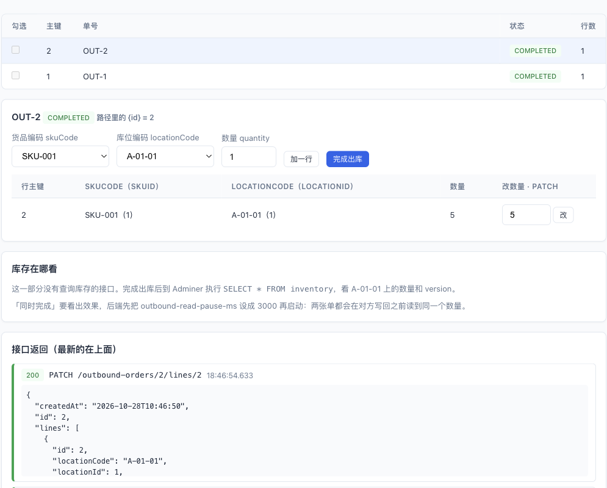
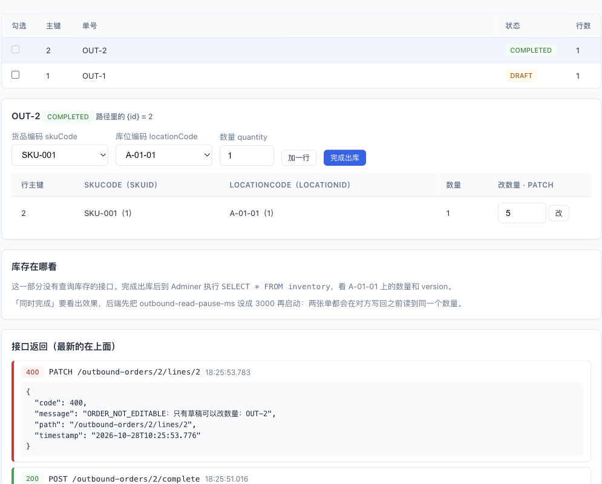
重点三：两个人同时出库
A-01-01 上只剩 1 个。OUT-4、OUT-5 各要出 1 个，都加好行先不完成；勾选这两张，点「同时完成勾选的单」：
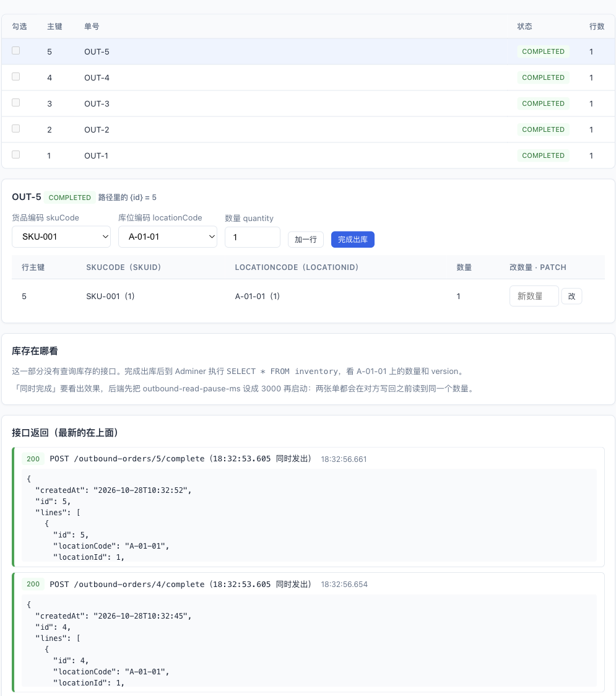
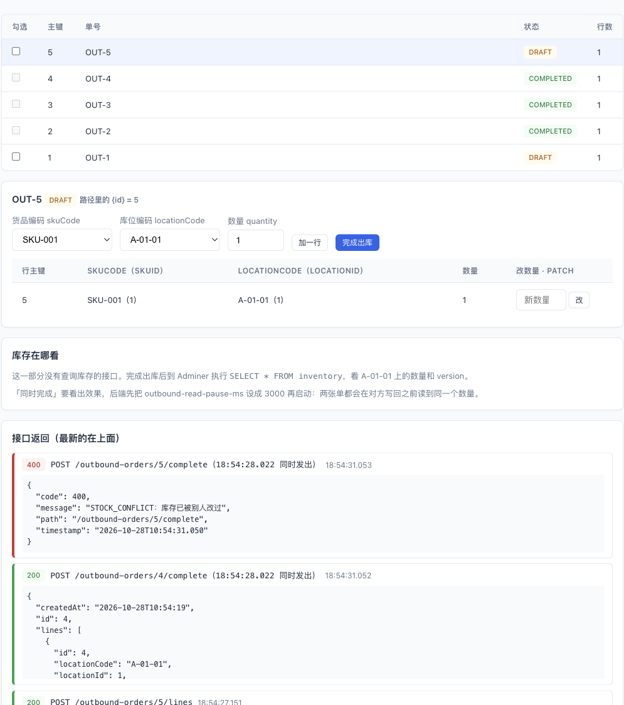
改良版怎么知道「被别人改过」：inventory 每一行多记一个版本号 version，每改一次加 1。写回时带上自己读到的版本号，版本号已经变了，就说明别人刚改过，这一次不写。
重点四：入库失败了，记录却留下来
这一部分在入库完成时多记一条「流水」（stock_flow 表），像银行流水，记着哪张单让哪个格子多了几个。入库中途出错时，单据和库存都会撤回。第三部分的流水却留了下来，账上多出一笔没发生的入库；改良版把流水一起撤回。这一处两个分支在页面上都返回 400，要到 Adminer 查 stock_flow。
这一部分要写什么
| 页面上点什么 | 调的接口 | 写到哪张表 | 讲义 |
|---|---|---|---|
| 「新建出库单」 | POST /outbound-orders | outbound_order 加一行，状态是草稿 | 第 4 节 |
| 「加一行」 | POST /outbound-orders/{id}/lines | outbound_order_line 加一行 | 第 5 节 |
| 「完成出库」 | POST /outbound-orders/{id}/complete | 从 inventory 那一格减数量，单据改成完成 | 第 6 节 |
| 行上的「改」 | PATCH /outbound-orders/{id}/lines/{lineId} | 改 outbound_order_line 的数量 | 第 7 节 |
| 入库页「完成入库」 | 第二部分的接口 | 多写一条 stock_flow | 第 8 节 |
- 第 4–8 节：每个接口从 Controller 写到 Mapper，看清数据落在哪张表的哪一列。
- 第 10–13 节：上面四个重点，每一个都在页面、日志、Adminer 里自己查一遍，再看是哪一行代码。
- 第 14 节：改良版改了哪四处。
实验每一步在页面上怎么点，见第 18 节。
1. 这一部分加了什么
出库和第二部分的入库是同一种写法：先建一张草稿，往草稿上加行，最后完成。完成时按行上记下的货品和库位，从 inventory 里减去数量，再把单据改成 COMPLETED。
| 接口 | 做什么 | 写到哪张表 |
|---|---|---|
POST /outbound-orders | 新建一张出库草稿，没有请求体 | outbound_order 插入一行 |
POST /outbound-orders/{id}/lines | 给草稿加一行：哪种货、从哪个库位出、多少 | outbound_order_line 插入一行 |
POST /outbound-orders/{id}/complete | 完成出库，没有请求体 | 改 inventory.quantity，改 outbound_order.status |
PATCH /outbound-orders/{id}/lines/{lineId} | 改一行的数量 | 改 outbound_order_line.quantity |
POST /inbound-orders/{id}/complete（已有） | 入库完成时多写一条流水 | stock_flow 插入一行 |
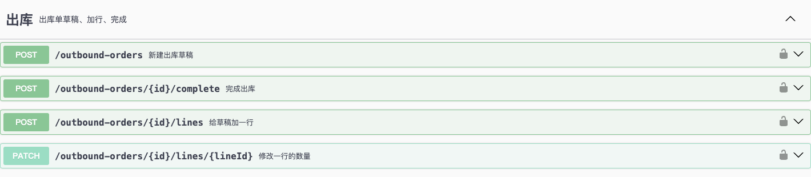
http://localhost:8080/swagger-ui.html，「出库」分组下就是这四个接口。右边的锁表示要先登录，把 POST /auth/login 返回的 token 填进 Authorize。每个接口都按同一条路走：
JSON 字段
取路径和字段
查、算、判断
一条 SQL
下面每个接口都按这个顺序给出真实代码，图里的行号就是文件里的行号。
2. 两张新表
V12 建出库单和出库行，V13 建库存流水。Flyway 在启动时按版本号执行，库里没有的表会自动建出来。
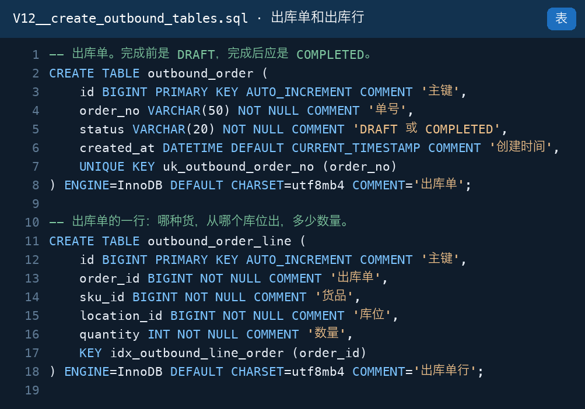
outbound_order 是单据本身：单号、状态、创建时间。outbound_order_line 是单据上的一行，order_id 指向出库单，sku_id 和 location_id 存的是主键，不是 SKU-001、A-01-01 这样的编码。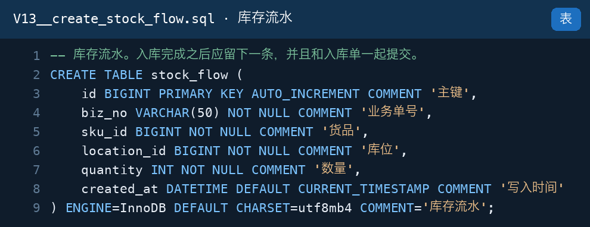
stock_flow 每次入库完成按行写一条：biz_no 是入库单号，另外三列和入库行一样。inventory 是第二部分的表，这一部分只读和改它。列是 id、sku_id、location_id、quantity、version，唯一键是 sku_id + location_id，一个格子上的一种货只有一行。
3. 开关怎样起作用
四个漏洞都由开关控制。一个开关的值走三步进到代码里：
app.lesson.outbound-check: off
@Value 读成 boolean
if (switches.outboundCheck())
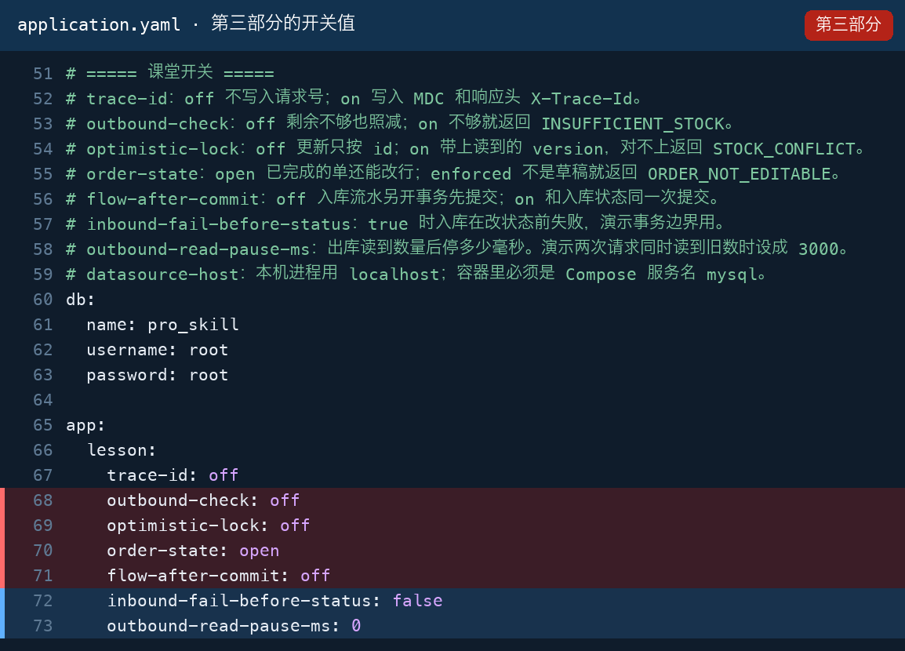
inbound-fail-before-status 是演示漏洞四用的，平时是 false。第 73 行 outbound-read-pause-ms 是演示漏洞三用的，平时是 0。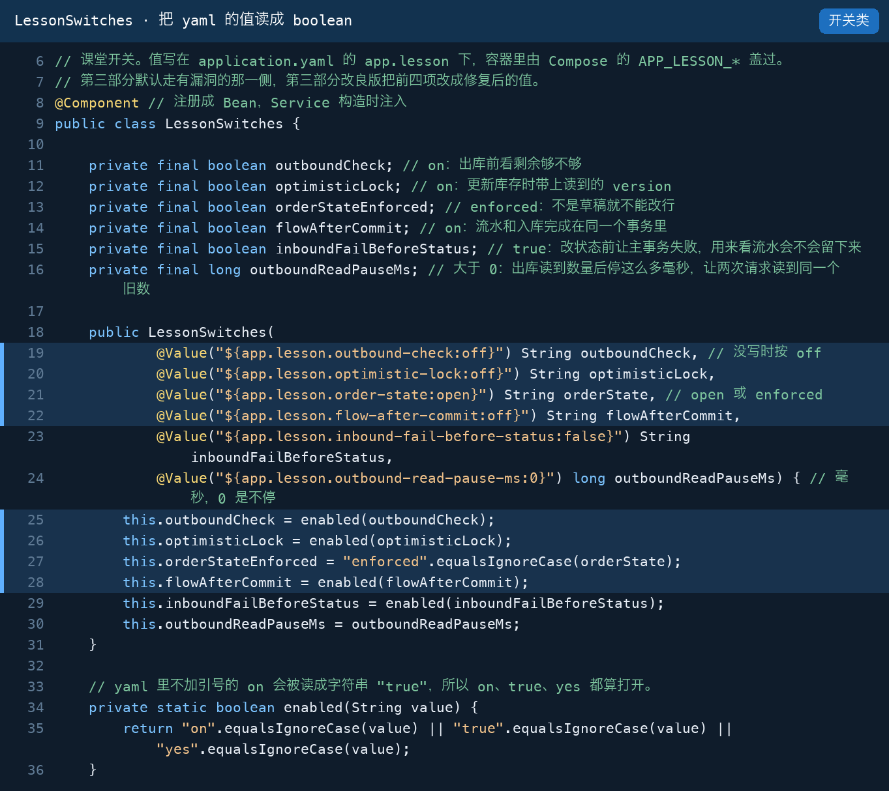
@Value("${app.lesson.xxx:默认值}") 把 yaml 里的字符串取进来，冒号后面是没写时的默认值。第 25–29 行把字符串变成 boolean。第 34–36 行：yaml 里不加引号的 on 会被读成字符串 "true"，所以 on、true、yes 都算打开。Service 构造时注入这个类，调用 switches.outboundCheck() 这样的方法。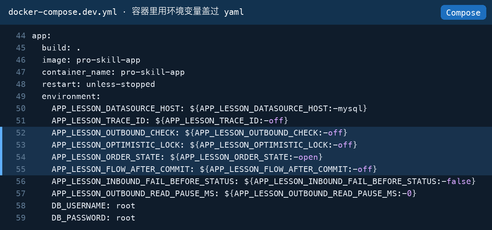
docker-compose.dev.yml 的环境变量盖过 yaml。Spring 把 APP_LESSON_OUTBOUND_CHECK 对应到 app.lesson.outbound-check。${APP_LESSON_OUTBOUND_CHECK:-off} 的意思是：命令行没给这个变量就用 off。改开关有三种办法，改完都要重启应用：
| 怎样运行 | 怎样改 |
|---|---|
IDE 里运行 ProSkillApplication | 改 application.yaml 的值；或者在运行配置的 Program arguments 里写 --app.lesson.outbound-check=on |
java -jar | 命令后面加 --app.lesson.outbound-check=on |
| Compose | APP_LESSON_OUTBOUND_CHECK=on docker compose -f docker-compose.dev.yml up -d --build --force-recreate app |
改良版上的值
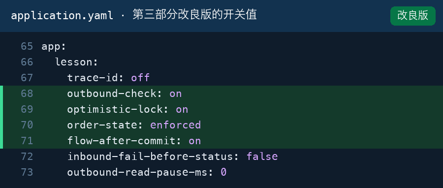
application.yaml，第 68–71 行是修好那一侧的值。其它行和第三部分相同。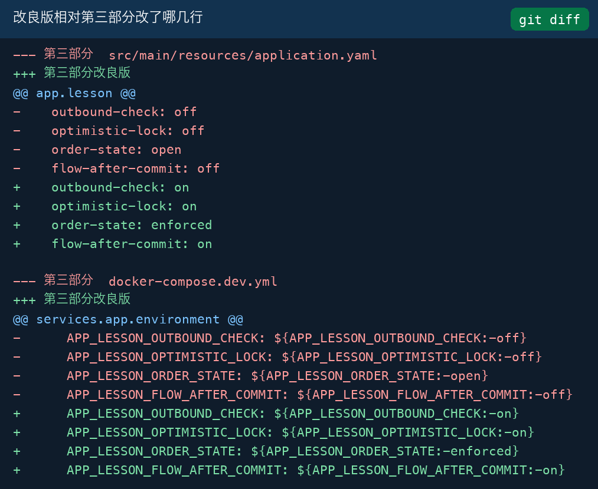
4. 接口一：新建出库草稿
POST /outbound-orders，没有请求体。单号要用主键拼出来，而主键要插入以后才有，所以先插一行占位，再改单号。
| 值 | 从哪来 | 经过 | 落在 |
|---|---|---|---|
"PENDING" | Service 写死 | entity.setOrderNo → insert 的 #{orderNo} | outbound_order.order_no（先占位） |
"DRAFT" | OutboundOrder.DRAFT | entity.setStatus → #{status} | outbound_order.status |
| 当前时间 | LocalDateTime.now() | #{createdAt} | outbound_order.created_at |
| 主键 | MySQL 自增 | useGeneratedKeys 写回 entity.id | outbound_order.id |
"OUT-" + id | Service 用主键拼 | updateOrderNo 的 #{orderNo}、#{id} | outbound_order.order_no（改成 OUT-1） |
Controller
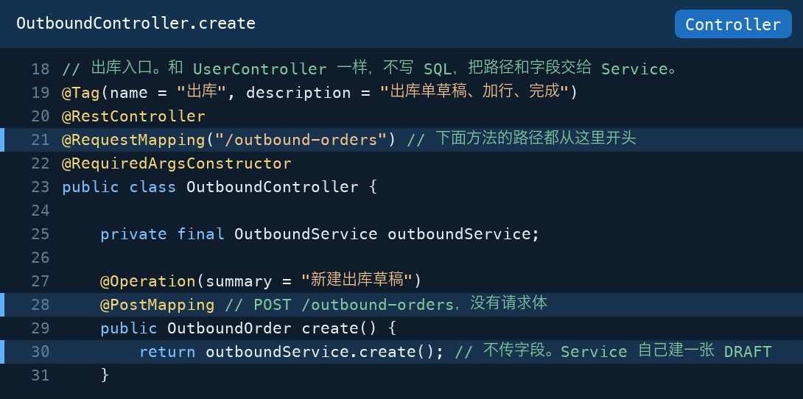
/outbound-orders。第 28 行 @PostMapping 不带路径，就是 POST /outbound-orders。第 30 行不传任何字段，直接调 Service。Service
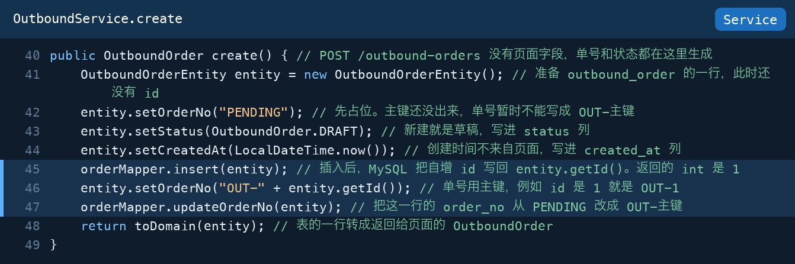
outbound_order 的一行。第 45 行插入，返回的 int 是 1（写下了一行），主键写回 entity.getId()。第 46–47 行用主键拼出 OUT-1 再写回去。第 48 行把这一行转成返回给页面的对象。Mapper
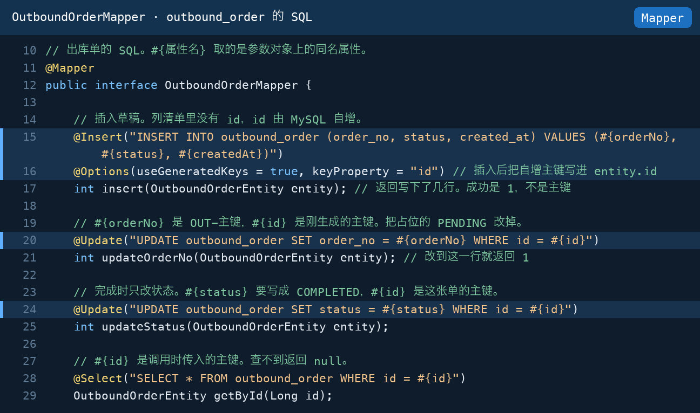
#{orderNo}、#{status}、#{createdAt} 取 entity 上的同名属性。第 16 行把自增主键写回 entity.id。第 20 行改单号，第 24 行完成出库时改状态，第 28 行按主键查一张单。结果
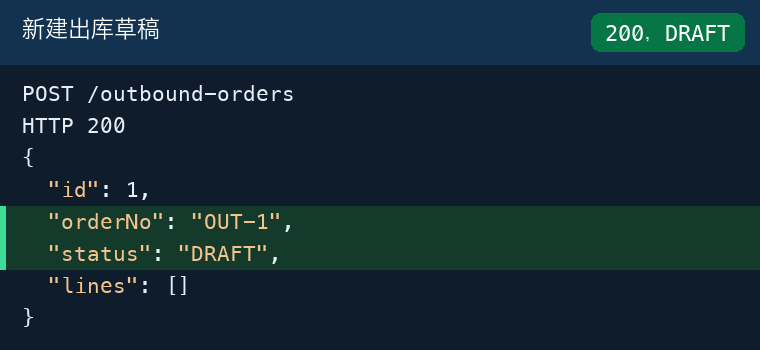
orderNo 是 OUT-1，status 是 DRAFT，还没有行。5. 接口二：给草稿加一行
POST /outbound-orders/1/lines，路径上的 1 是出库单主键。请求体：
{ "skuCode": "SKU-001", "locationCode": "A-01-01", "quantity": 15 }
| 值 | 从哪来 | 经过 | 落在 |
|---|---|---|---|
id | 路径 {id} | @PathVariable Long id → addLine(orderId, …) → requireDraft | outbound_order_line.order_id |
skuCode | JSON | request.getSkuCode() → skuMapper.getByCode 换成 sku.id | outbound_order_line.sku_id |
locationCode | JSON | request.getLocationCode() → locationMapper.getByCode 换成 location.id | outbound_order_line.location_id |
quantity | JSON | request.getQuantity() → line.setQuantity | outbound_order_line.quantity |
Request
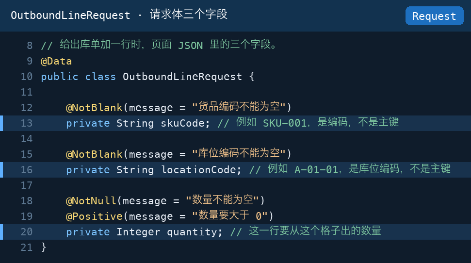
@NotBlank、@Positive 在进 Controller 之前就检查，空编码或数量不大于 0 直接返回 400。Controller
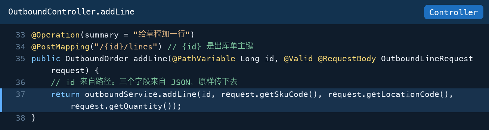
id 取自路径，request 是整个 JSON。第 37 行和 UserController 一样，把三个字段一个个取出来传给 Service，不在这里组装对象。Service
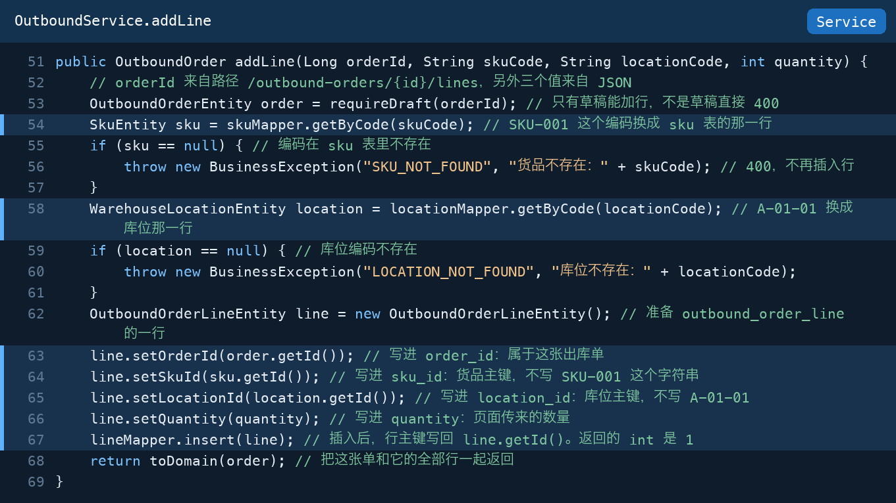
line.getId()。Mapper
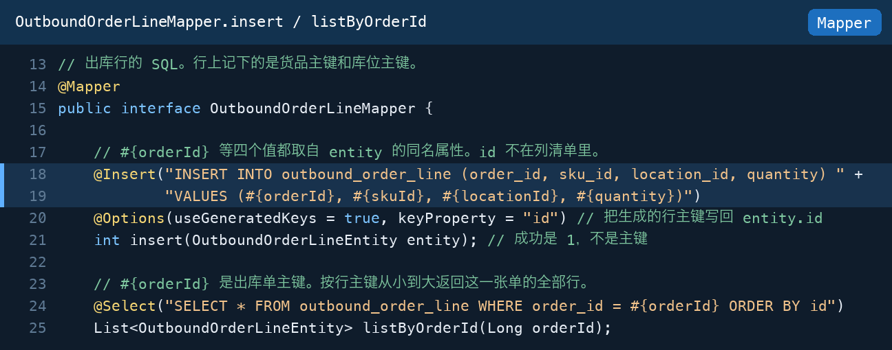
#{} 取 entity 上的同名属性，列清单里没有 id。第 24 行按单据主键取回全部行，完成出库时要用。结果
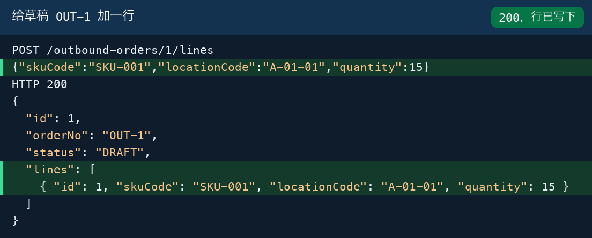
lines 里多了一行，行主键是 1。返回时主键又查回了编码，所以能看到 SKU-001 和 A-01-01。6. 接口三：完成出库
POST /outbound-orders/2/complete，没有请求体。数量用行上已经记下的 quantity。
| 步骤 | 代码 | 读或写 |
|---|---|---|
| 1. 单据是不是草稿 | requireDraft(orderId) → orderMapper.getById | 读 outbound_order |
| 2. 取这张单的行 | lineMapper.listByOrderId | 读 outbound_order_line |
| 3. 找这个格子的库存 | inventoryMapper.getBySkuAndLocation(line.getSkuId(), line.getLocationId()) | 读 inventory 一行 |
| 4. 算新数量 | next = current - line.getQuantity() | 只在内存里算 |
| 5. 写回数量 | updateQuantity 或 updateQuantityIfVersion（看开关） | 写 inventory.quantity |
| 6. 改状态 | orderMapper.updateStatus | 写 outbound_order.status |
Controller
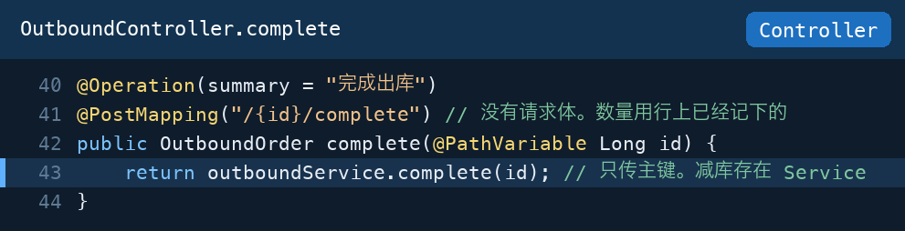
Service
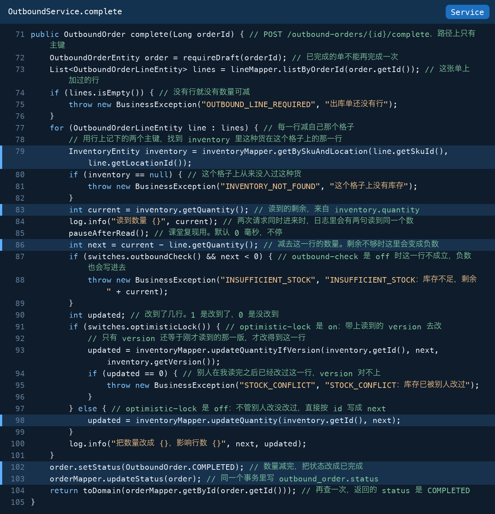
current。第 86 行算出 next。第 87 行看开关决定剩余不够时停不停。第 91–98 行看开关决定写回时带不带 version。第 102–103 行改状态。整个方法在类上的 @Transactional 里，减库存和改状态一起提交。Mapper
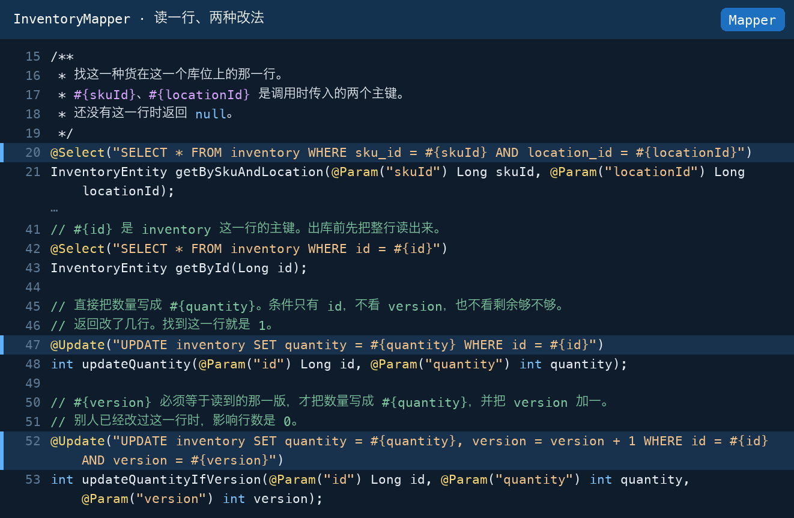
id，第 52 行条件多了 version = #{version}，并把 version 加一。两条 UPDATE 返回的 int 都是改到了几行：1 是改到了，0 是没改到。结果
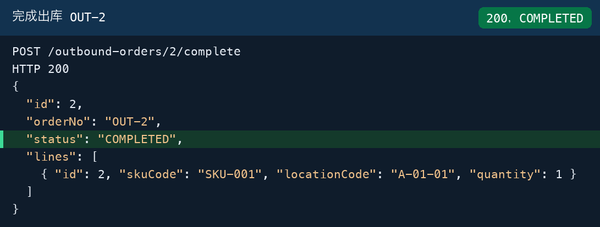
status 变成 COMPLETED，inventory.quantity 变成 9。7. 接口四：改一行的数量
PATCH /outbound-orders/2/lines/2，第一个 2 是出库单主键，第二个 2 是行主键。请求体只有新数量：
{ "quantity": 5 }
| 值 | 从哪来 | 经过 | 落在 |
|---|---|---|---|
id | 路径 {id} | orderMapper.getById，看状态 | 只读 |
lineId | 路径 {lineId} | lineMapper.getById，看是不是这张单的行；updateQuantity 的 #{id} | UPDATE 的条件 |
quantity | JSON | request.getQuantity() → #{quantity} | outbound_order_line.quantity |
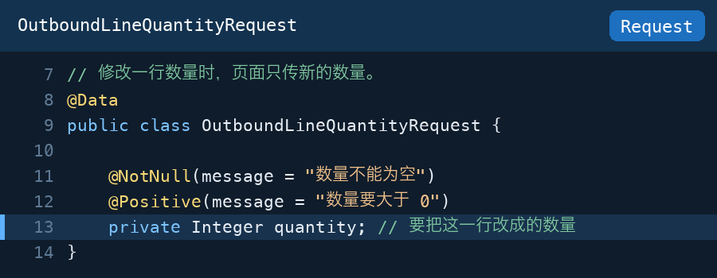
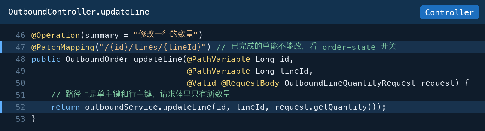
@PatchMapping 带两个路径变量。第 52 行把两个主键和新数量传给 Service。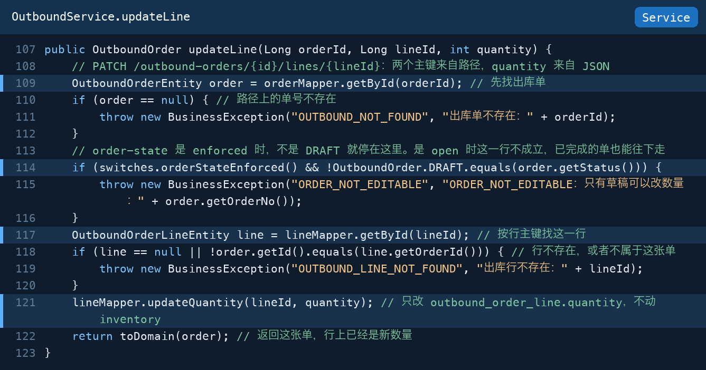
inventory 不动。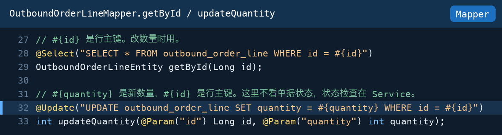
8. 入库完成时写流水
入库三个接口是第二部分的。这一部分在 InboundService.complete 里加了一步：每一行加完库存，写一条 stock_flow。流水要和入库单一起成功、一起失败。写在哪个事务里，由 flow-after-commit 决定。
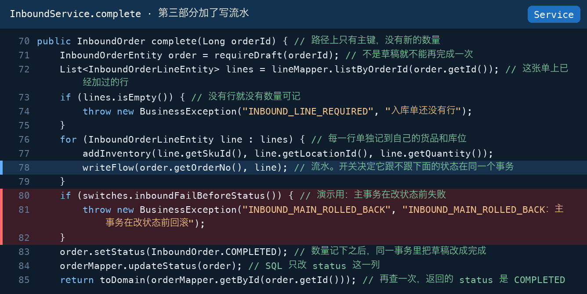
inbound-fail-before-status 是 true 时，在改状态之前抛出异常，整个事务回滚。平时这个开关是 false，不会走到第 81 行。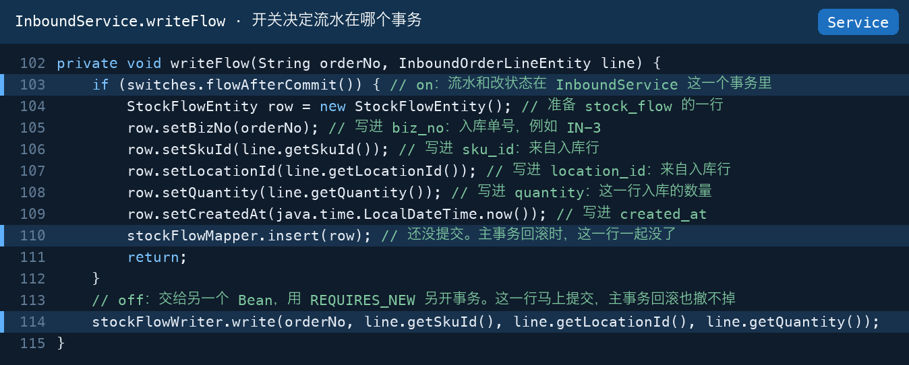
on 时走第 104–110 行：在 InboundService 自己的事务里插入流水，第 110 行插入后还没提交。off 时走第 114 行：交给另一个 Bean。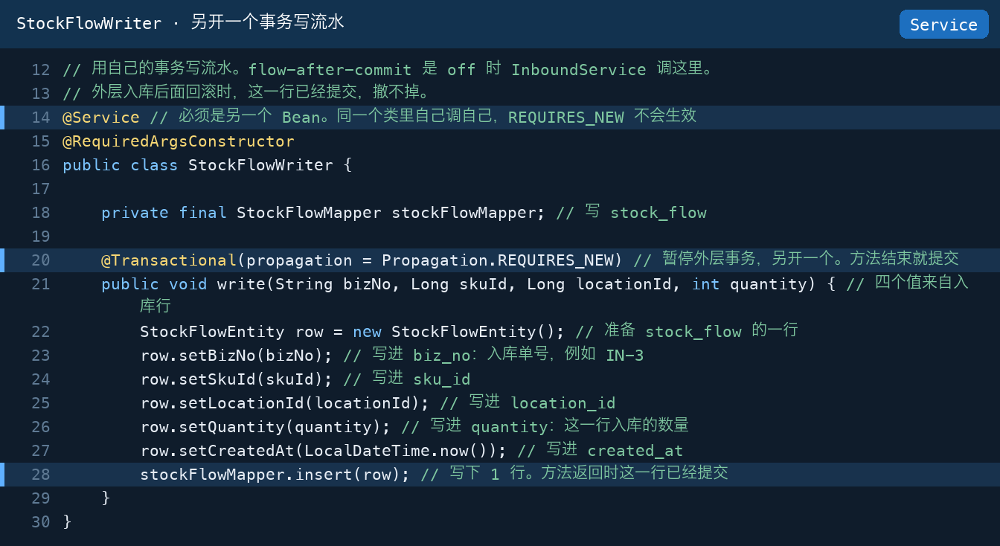
REQUIRES_NEW：先把外层事务挂起，另开一个新事务，方法结束时新事务就提交。第 14 行的说明很要紧：这个方法必须放在另一个 Bean 里。同一个类里自己调自己，不经过 Spring 的代理，REQUIRES_NEW 不起作用。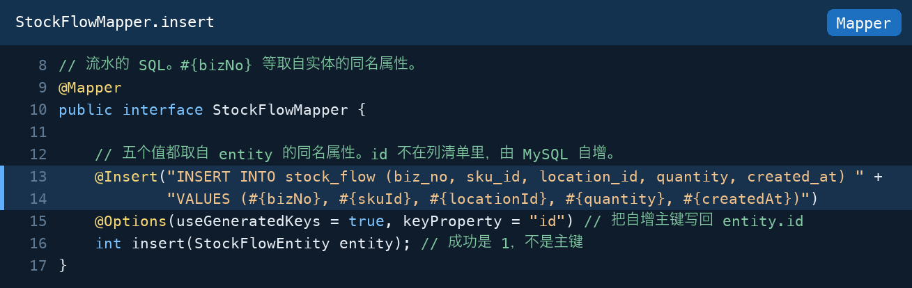
#{} 取 entity 上的同名属性，写进 stock_flow 的五列。返回的 int 是 1，不是主键。9. 实验顺序
下面的结果都是按这个顺序在两个分支上各跑一遍得到的。想让主键和图上一样，先在 Adminer（http://localhost:8081，库 pro_skill）的「SQL命令」里清空这几张表：
TRUNCATE TABLE stock_flow; TRUNCATE TABLE outbound_order_line; TRUNCATE TABLE outbound_order; TRUNCATE TABLE inbound_order_line; TRUNCATE TABLE inbound_order; TRUNCATE TABLE inventory;
不清空也可以，主键以自己响应里的为准。货品 SKU-001 和库位 A-01-01、A-01-02 是前两部分已有的。每个请求都要带登录拿到的 token。
| 步 | 请求 | 第三部分 | 改良版 |
|---|---|---|---|
| 1 | 入库 IN-1：POST /inbound-orders；POST /inbound-orders/1/lines {"skuCode":"SKU-001","locationCode":"A-01-01","quantity":10}；POST /inbound-orders/1/complete | 两边一样：A-01-01 上 SKU-001 是 10 | |
| 2 | OUT-1 出 15：新建；POST /outbound-orders/1/lines {"skuCode":"SKU-001","locationCode":"A-01-01","quantity":15}；完成 | 200，库存 -5 | 400 INSUFFICIENT_STOCK，库存 10 |
| 3 | 只在第三部分做：Adminer 里执行 UPDATE inventory SET quantity = 10 WHERE id = 1; | 库存回到 10，后面几步和改良版从同一个数开始 | 不用做 |
| 4 | OUT-2 出 1：新建；加一行 quantity 1；完成；再 PATCH /outbound-orders/2/lines/2 {"quantity":5} | PATCH 200，行变成 5，库存 9 | PATCH 400 ORDER_NOT_EDITABLE，行还是 1 |
| 5 | OUT-3 出 8：新建；加一行 quantity 8；完成 | 两边一样：库存 1 | |
| 6 | 把 outbound-read-pause-ms 设成 3000 重启。OUT-4、OUT-5 各出 1：两张都新建、加行；然后 3 秒内先后发两张的 complete | 两张都 200，库存 0 | 一张 200，一张 400 STOCK_CONFLICT，库存 0 |
| 7 | 把 inbound-fail-before-status 设成 true 重启。入库 IN-2：新建；加一行 {"skuCode":"SKU-001","locationCode":"A-01-02","quantity":4}；完成 | 400，IN-2 是草稿，stock_flow 里有 IN-2 | 400，IN-2 是草稿，stock_flow 里没有 IN-2 |
做完第 7 步把 inbound-fail-before-status 改回 false，outbound-read-pause-ms 改回 0。
10. 漏洞一：剩余不够也照减
漏洞是什么
完成出库时只算了 next = current - 行数量，没有看结果是不是小于 0。A-01-01 上只有 10 件，单据要出 15 件，系统照样完成，库存记成 -5。仓库里没有 -5 件货，这张单发出去的 5 件在账上找不到来源。
复现：实验顺序第 2 步
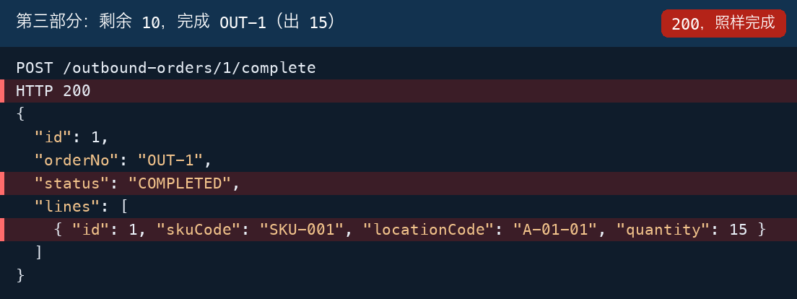
status 是 COMPLETED。只看响应发现不了问题。去库里查
Adminer「SQL命令」里执行：
SELECT id, order_no, status FROM outbound_order WHERE id = 1; SELECT id, order_id, sku_id, location_id, quantity FROM outbound_order_line WHERE order_id = 1; SELECT id, sku_id, location_id, quantity, version FROM inventory WHERE sku_id = 1 AND location_id = 1;
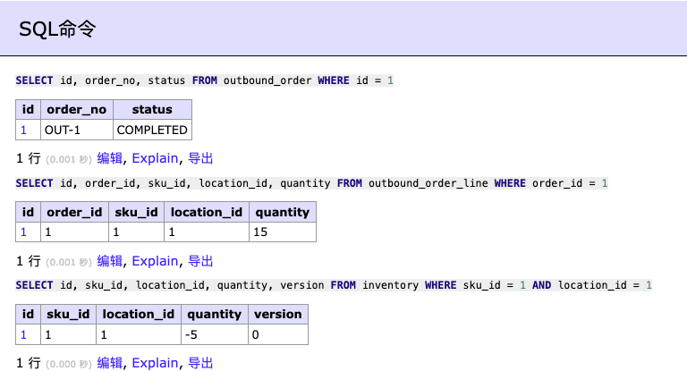
inventory.quantity 是 -5。是哪一行代码
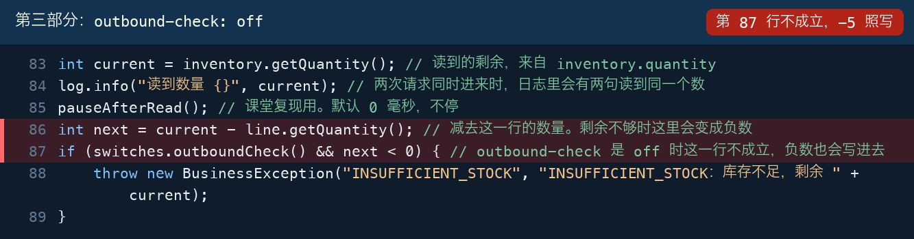
next = 10 - 15 = -5。第 87 行要求 switches.outboundCheck() 为真，off 时整个条件不成立，第 88 行不执行，代码往下把 -5 写进库。改良版怎么改
改良版把 outbound-check 设成 on。第 87 行变成只看 next < 0：剩余不够时走第 88 行抛出 INSUFFICIENT_STOCK。异常让整个事务回滚，减库存的 UPDATE 不会执行，单据也不会改成完成。
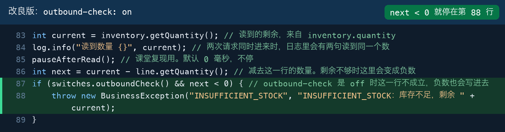
改完的结果
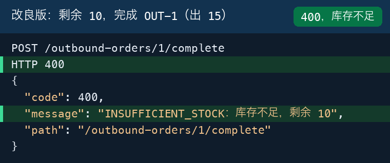
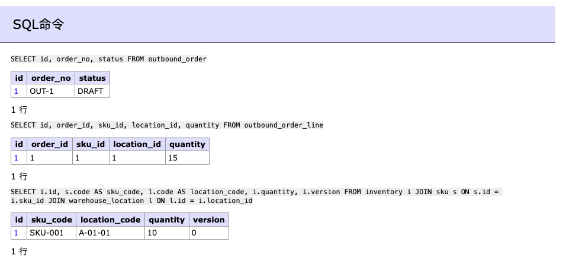
DRAFT，库存还是 10。11. 漏洞二：已完成的单还能改
漏洞是什么
库存是在完成那一刻按行上的数量减的。完成以后再改行上的数量，inventory 不会跟着变。单据上写出了 5 件，库存只少了 1 件，对账时两边对不上。单据应该只在草稿时能改，完成以后就定下来。
复现：实验顺序第 4 步
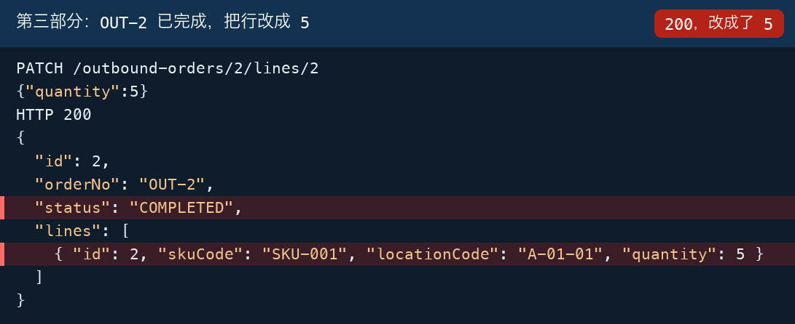
COMPLETED，PATCH 仍返回 200，行上的数量变成 5。去库里查
SELECT id, order_no, status FROM outbound_order WHERE id = 2; SELECT id, order_id, quantity FROM outbound_order_line WHERE order_id = 2; SELECT id, sku_id, location_id, quantity, version FROM inventory WHERE sku_id = 1 AND location_id = 1;
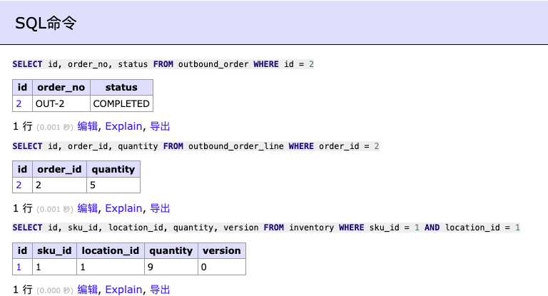
是哪一行代码
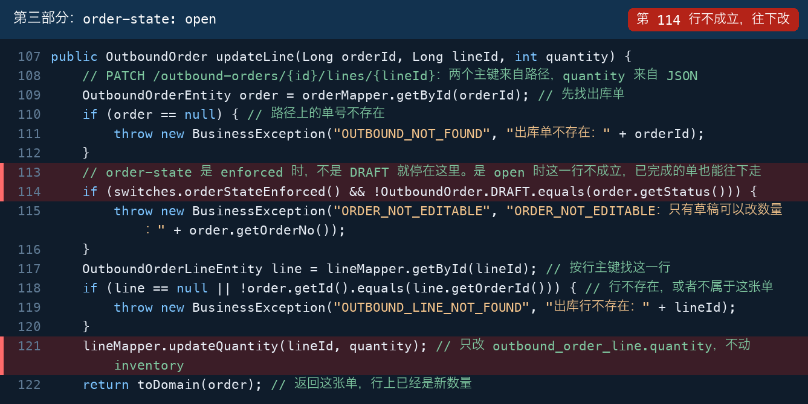
switches.orderStateEnforced() 为真。open 时条件不成立，不看单据状态，直接走到第 121 行改数量。改良版怎么改
改良版把 order-state 设成 enforced。第 114 行只要状态不是 DRAFT 就走第 115 行，返回 ORDER_NOT_EDITABLE，第 121 行的 UPDATE 不执行。单据的状态只能从 DRAFT 走到 COMPLETED，完成以后行不能再动。
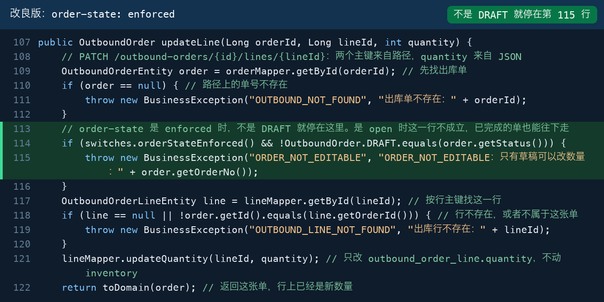
改完的结果
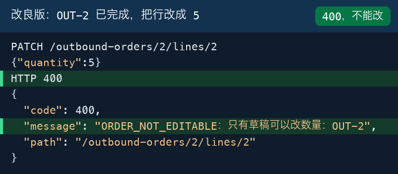
ORDER_NOT_EDITABLE。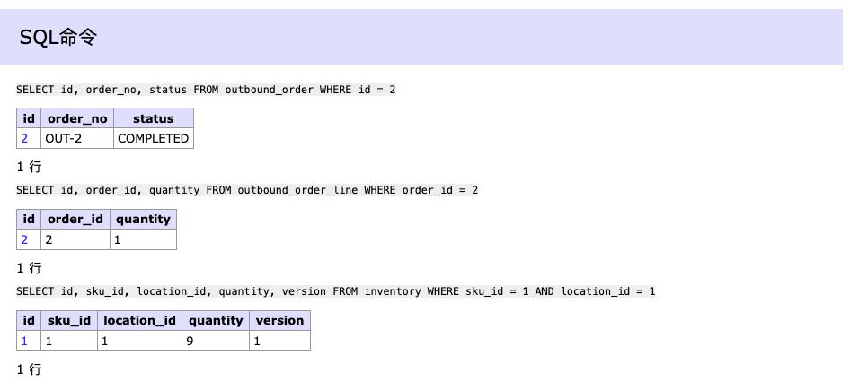
12. 漏洞三：两次同时出库只减一次
漏洞是什么
完成出库是「先读、再算、再写」三步。格子上只剩 1 件，OUT-4 和 OUT-5 各出 1 件，几乎同时完成。两次请求都在对方写回之前读到 1，都算出 1 - 1 = 0，都把库存写成 0。结果两张单都完成，发出去 2 件，库存只少了 1 件。后写的那一次把先写的结果盖掉了，这叫丢失更新。
outbound-check 打开也挡不住：两次算出的 next 都是 0，不小于 0。要挡住，写回时得确认「我读到的那一版还没被别人改过」。
让两次请求读到同一个数
两次请求要在几毫秒内先后到，手点很难点出来。课堂上用 outbound-read-pause-ms 把读和写之间拉开 3 秒：
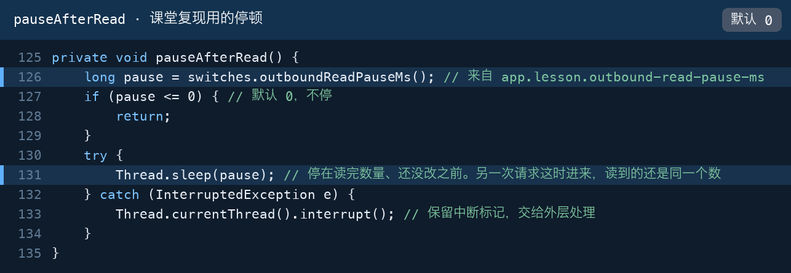
complete 第 85 行调用，位置在读到数量之后、写回之前。启动时加 --app.lesson.outbound-read-pause-ms=3000（或改 yaml 第 73 行）。OUT-4、OUT-5 都新建、加好行以后，开两个终端，各粘一条，3 秒内先后回车。用 Postman 也行：开两个标签页，先后点 Send。
curl -X POST http://localhost:8080/outbound-orders/4/complete -H "Authorization: Bearer 你的token" curl -X POST http://localhost:8080/outbound-orders/5/complete -H "Authorization: Bearer 你的token"
复现：实验顺序第 6 步
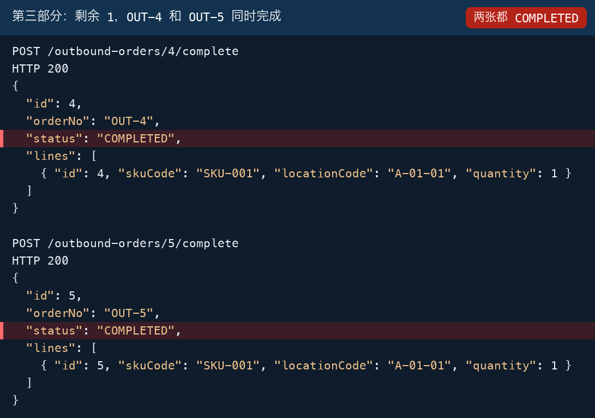
COMPLETED。去日志和库里查
控制台日志里，方括号里的 exec-9、exec-10 是处理请求的线程名，一次请求从头到尾在同一个线程上，按线程名就能把两次请求分开。
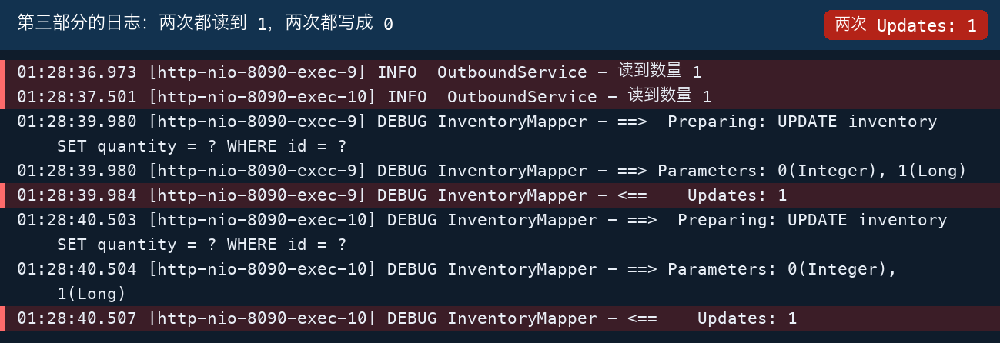
UPDATE inventory SET quantity = ? WHERE id = ?，参数都是 0，都是 Updates: 1。SELECT id, order_no, status FROM outbound_order WHERE id IN (4, 5); SELECT id, order_id, quantity FROM outbound_order_line WHERE order_id IN (4, 5); SELECT id, sku_id, location_id, quantity, version FROM inventory WHERE sku_id = 1 AND location_id = 1;
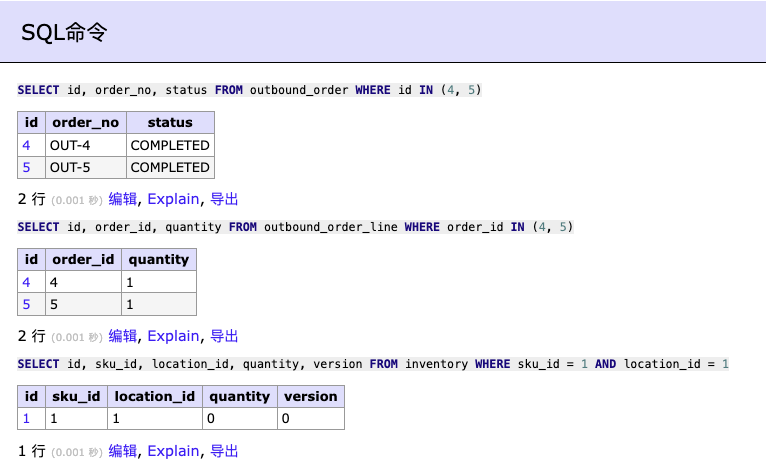
是哪一行代码
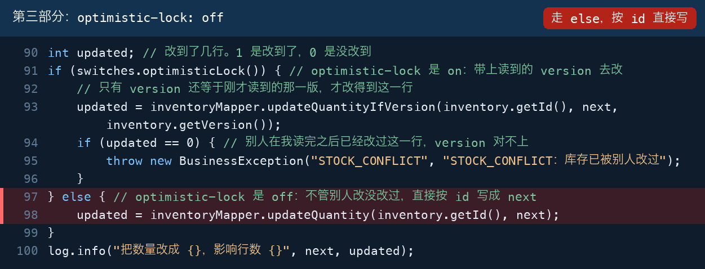
optimistic-lock 是 off，第 91 行不成立，走第 97–98 行，按 id 直接写成 next。id。不管这一行在我读完之后有没有被改过，都改得到，都返回 1。改良版怎么改：乐观锁
改良版把 optimistic-lock 设成 on，走第 92–96 行。读的时候连 version 一起读出来；写的时候条件带上这个 version，写成功就把 version 加一。
inventory.getVersion() 传给 Mapper。第 94 行返回 0 说明这一行在我读完之后被别人改过，第 95 行抛出 STOCK_CONFLICT，事务回滚，这张单留在草稿。WHERE id = #{id} AND version = #{version}，同时 version = version + 1。两次请求还是都读到数量 1、version 2。先写的那次条件成立，库存变成 0，version 变成 3。MySQL 让第二条 UPDATE 等第一条提交以后再执行，这时 version 已经是 3，version = 2 对不上，改到 0 行。
改完的结果
version = 2。exec-10 先写，Updates: 1；exec-1 后写，Updates: 0。STOCK_CONFLICT。13. 漏洞四：入库失败，流水留下
漏洞是什么
流水是「这张单让库存变了多少」的记录，只有入库单真的完成了才该有。off 时流水由 StockFlowWriter 另开事务写，写完马上提交。后面主事务失败回滚，库存和单据状态撤回去了，流水撤不回来。流水上写着 IN-2 入了 4 件，库里没有这 4 件，单据也没完成。
复现：实验顺序第 7 步
启动时加 --app.lesson.inbound-fail-before-status=true，让入库在改状态之前失败（第 8 节 InboundService.complete 第 80–82 行）。
去库里查
SELECT id, order_no, status FROM inbound_order WHERE id = 2; SELECT id, sku_id, location_id, quantity FROM inventory WHERE sku_id = 1 AND location_id = 2; SELECT id, biz_no, sku_id, location_id, quantity FROM stock_flow WHERE biz_no = 'IN-2';
DRAFT，A-01-02 上没有库存，stock_flow 里却有 IN-2 的 4 件。是哪一行代码
flow-after-commit 是 off，第 103 行不成立，走第 114 行。改良版怎么改：流水和入库同一次提交
改良版把 flow-after-commit 设成 on，走第 104–111 行。流水用 InboundService 自己的 stockFlowMapper 插入，和加库存、改状态在同一个事务里。到第 81 行抛异常时，三处写一起撤回。
StockFlowWriter。改完的结果
DRAFT，库存没有，stock_flow 里也没有 IN-2。单据、库存、流水三处一致。14. 改良版改了哪四块
两个分支的 Java 代码相同。改良版改的是 application.yaml 和 docker-compose.dev.yml 里四个开关的默认值（第 3 节的差别图），改完以后同一个请求走 Service 里修好的那几行。
| 开关 | 第三部分 | 改良版 | 改良版走的代码 | 同一操作的结果 |
|---|---|---|---|---|
outbound-check | off | on | OutboundService 第 87–88 行：next < 0 就抛出 | 出 15：-5 变成 400 INSUFFICIENT_STOCK，库存保持 10 |
order-state | open | enforced | 第 114–115 行：不是 DRAFT 就抛出 | 改已完成的单：200 变成 400 ORDER_NOT_EDITABLE |
optimistic-lock | off | on | 第 92–96 行和 InventoryMapper 第 52 行：带 version 更新 | 同时出库：两张都完成变成一张完成、一张 STOCK_CONFLICT |
flow-after-commit | off | on | InboundService 第 104–111 行：同一个事务插入流水 | 入库失败：流水留下变成流水也撤回 |
新建出库单、加一行、正常的完成出库，两个分支结果相同。
15. 用测试把两条路径跑一遍
两个测试类把开关写死，在哪个分支上跑结果都一样，用来确认两条路径各自的行为：
| 测试类 | 开关 | 断言 |
|---|---|---|
OutboundDefectPathTest | optimistic-lock=off，flow-after-commit=off | 同时完成两张：两张都 COMPLETED，库存 0。入库失败：单据 DRAFT，流水有 1 行 |
OutboundFixedPathTest | optimistic-lock=on，flow-after-commit=on | 同时完成两张：一张 COMPLETED，一张 STOCK_CONFLICT，库存 0。入库失败：流水 0 行 |
./mvnw test -Dtest='Outbound*PathTest'
OutboundControllerIntegrationTest 按当前分支的默认开关断言：第三部分上断言 -5 和 200，改良版上断言 INSUFFICIENT_STOCK 和 ORDER_NOT_EDITABLE。
16. 把改良版合并进第三部分
仓库地址仍是 https://gitee.com/dingsaier/warehouse-backend.git。源分支是 第三部分改良版，目标分支是 第三部分。讲义两边是同一份，合并带过去的是第 3 节差别图里的开关值和对应的测试断言。操作和第二部分最后一节相同，教师做，全班看，只合并这一次。
- GitHub Desktop 里点 Fetch origin，Current Branch 选「第三部分改良版」。
- 上方是 Push origin 时点它，把改良版送到 Gitee。
- 浏览器打开仓库，「Pull Requests」→「新建 Pull Request」，源分支
第三部分改良版，目标分支第三部分，标题「合入第三部分改良版」，点「创建」。文件列表里能看到application.yaml、docker-compose.dev.yml和OutboundControllerIntegrationTest。 - 在这个 Pull Request 页面点「合并」并确认。
- GitHub Desktop 切回「第三部分」，点 Pull origin。
application.yaml 第 68–71 行变成 on、on、enforced、on。重启后按实验顺序再跑一遍，结果和这份讲义里的改良版一致。17. 作业里要写同类接口时
把下面这段发给 DeepSeek 或 Kimi。生成后按第 4–7 节的顺序检查：字段有没有原样走到 SQL，剩余不够有没有在 UPDATE 之前停下，UPDATE 的条件有没有带 version，影响行数是 0 时有没有报错。
这是 Spring Boot 项目，包名 com.eurasia.pro_skill，MyBatis 注解写 SQL。 请按 UserController 的方式写出库：Controller 把路径变量和请求字段一个个传给 Service，不要用 builder。 出库单 outbound_order：单号 OUT-主键、状态 DRAFT/COMPLETED、创建时间。 出库行 outbound_order_line：order_id、sku_id、location_id、quantity。请求里传货品编码和库位编码，Service 换成主键再写。 完成出库时，按行上的货品和库位找到 inventory 那一行，读出 quantity 和 version： - 剩余不够就抛出 INSUFFICIENT_STOCK，不写库 - UPDATE inventory SET quantity = ?, version = version + 1 WHERE id = ? AND version = ? - 影响行数是 0 就抛出 STOCK_CONFLICT - 减库存和改状态在同一个 @Transactional 里 只有 DRAFT 的单能改行数量，否则抛出 ORDER_NOT_EDITABLE。 每一行代码加注释：这个值从哪来、写到哪一列、返回的 int 是什么。 生成后说明：两次同时完成同一个格子的出库，第二次为什么改到 0 行。
18. 在页面上复现
第 9 节的实验也可以在前端页面上点。前端仓库切到「第三部分」分支启动，左边菜单多了「出库」。第 1 步在入库页做，第 2–6 步在出库页做，第 3 步改数量仍然在 Adminer 里做。后端在「第三部分」和「第三部分改良版」之间切换时，前端不用动。
出库页和入库页一样：新建、加一行、完成。多了两样：每一行右边有「改数量」，发的是 PATCH /outbound-orders/{id}/lines/{lineId}；上面的表里，草稿单前面有勾选框，勾两张以上，点右上角「同时完成勾选的单」。
第 2–4 步：出 15，改已完成的单
两个分支的结果见开头「先看页面」的重点一、二。
第 6 步：两张单同时完成
手点两次，很难让两个请求在几毫秒内先后到。页面用一个按钮把两个请求一起发出去。后端仍然要把 outbound-read-pause-ms 设成 3000 再启动。OUT-4、OUT-5 各加一行数量 1，先不点完成；勾选这两张，点「同时完成勾选的单」。两个分支的结果见开头「先看页面」的重点三。
src/scripts/pages/outbound/list.ts。第 96 行记下发出的时间。第 97–99 行对每张勾选的单各调一次 outboundApi.complete，Promise.all 等它们全部回来，所以两个请求是同一刻发出的。第 101–104 行按回来的先后记进「接口返回」。后端收到的是两个 POST /outbound-orders/{{id}}/complete，后面走第 6 节的 OutboundService.complete。第 7 步在入库页做。两边都返回 400，区别在 stock_flow 表里有没有 IN-2，到 Adminer 看。